New York — jour par jour · du lundi 19 au lundi 26 octobre · Jersey City (Liberty Ave)
Comment lire le programmedurées, prix, Go City
En haut à droite de chaque étape : la durée, et juste en dessous ce qu'elle coûte.
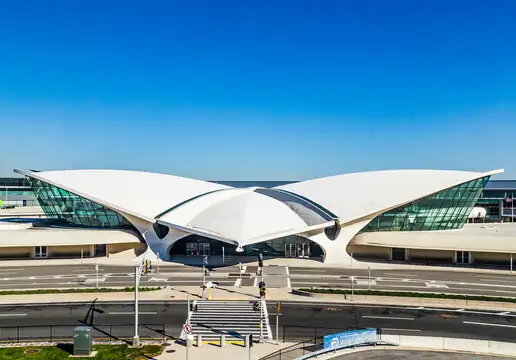
🖼️ Photo — Lun. 19 — Arrivée-
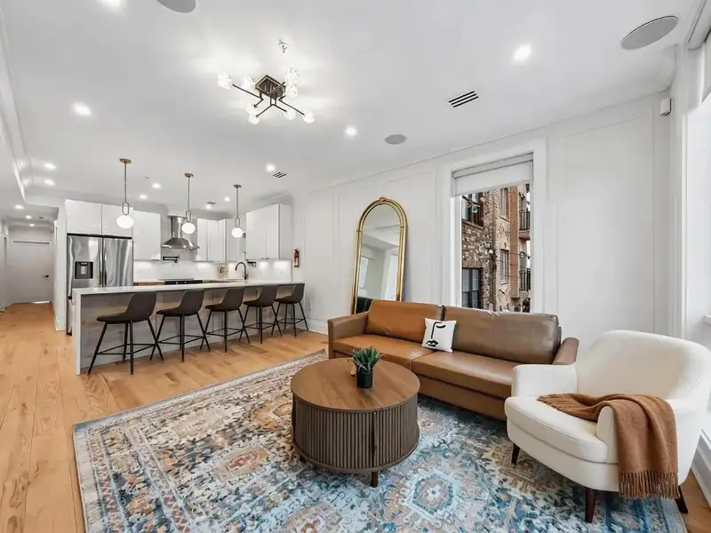
🖼️ Photo — Transfert + nuitTransfert + nuitle reste de la soiréeà part
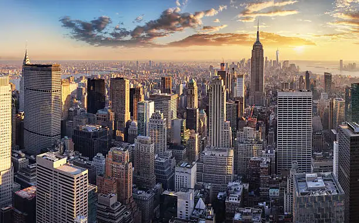
🖼️ Photo — Mar. 20 — Midtown, Times Square & Broadway 🎭-
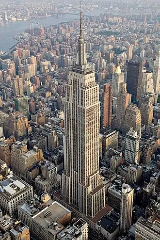
🖼️ Photo — Empire State BuildingEmpire State Building1 h 30inclus Go City -
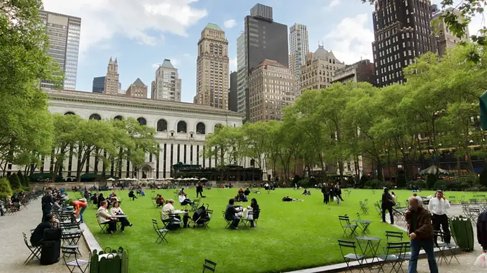
🖼️ Photo — Bryant Park & BibliothèqueBryant Park & Bibliothèque45 mingratuit -
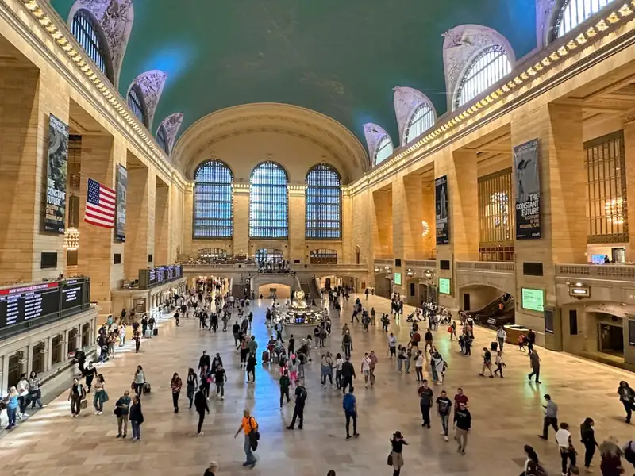
🖼️ Photo — Grand Central TerminalGrand Central Terminal30 mingratuit - 🖼️ Photo — Déjeuner — Midtown / Bryant ParkDéjeuner Midtown / Bryant Park
La Pecora Bianca (italien, portions généreuses, sympa à plusieurs) ou Olio e Più (italien animé). Sinon sandwichs/kiosques autour de Bryant Park. -
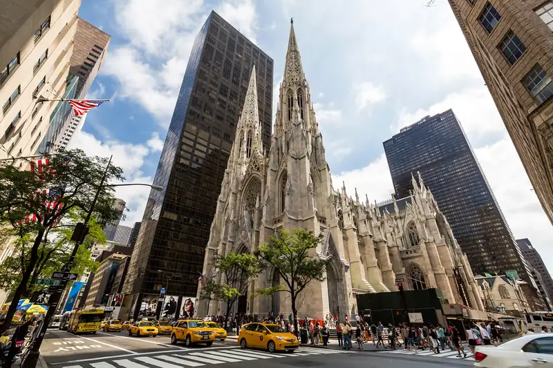
🖼️ Photo — Cathédrale St PatrickCathédrale St Patrick30 mingratuit -
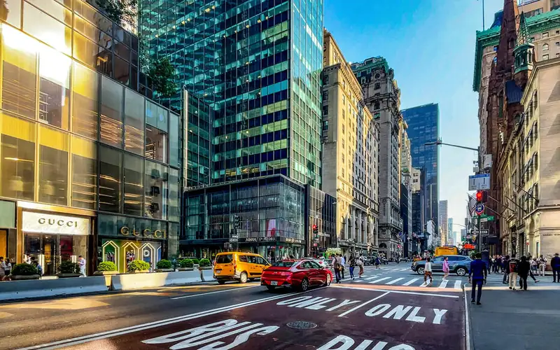
🖼️ Photo — 5e Avenue (shopping & vitrines)5e Avenue (shopping & vitrines)45 mingratuit - 🖼️ Photo — MoMAMoMA option2 hinclus Go City
-
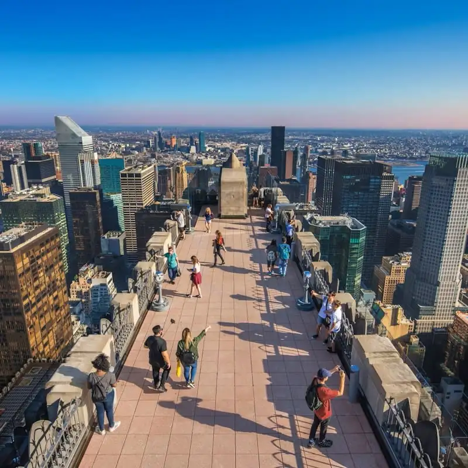
🖼️ Photo — Top of the RockTop of the Rock 1 observatoire1 h 30inclus Go City -
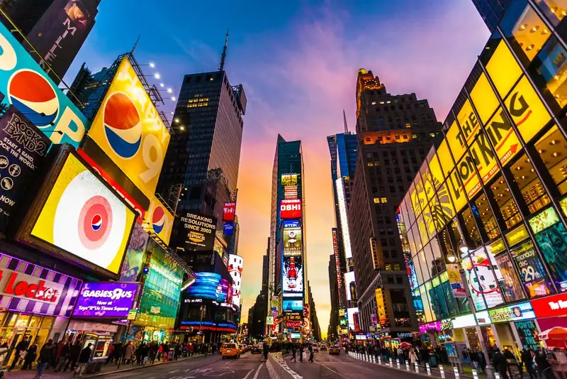
🖼️ Photo — Times SquareTimes Square30 mingratuit -
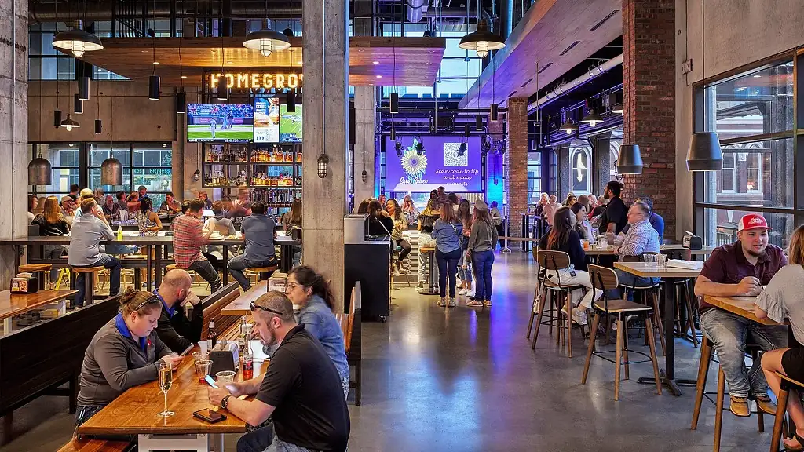
🖼️ Photo — Dîner rapide avant le show — Theater DistrictDîner rapide avant le show Theater District
Bien des spots pré-théâtre autour de la 46e (Ellen's Stardust, Junior's cheesecake, food halls). Prévoyez de manger tôt (spectacle ~19h/20h). -
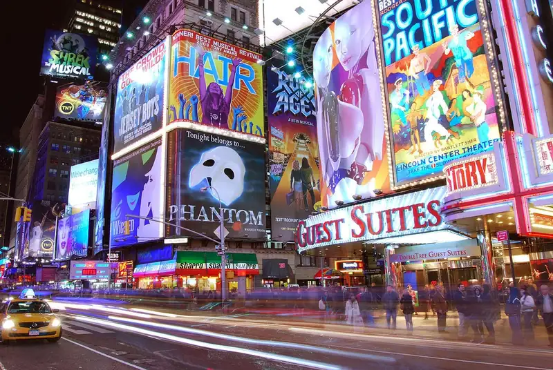
🖼️ Photo — 🎭 Spectacle de Broadway🎭 Spectacle de Broadwaysoirée (~2 h 30)billet à partL'idée pour cette soirée. Réservez à l'avance (ou billets réduits du jour au kiosque TKTS de Times Square). Pensez aux places PMR à réserver tôt. Alternative ce soir-là si jamais vous préférez : Knicks, soirée d'ouverture au MSG.
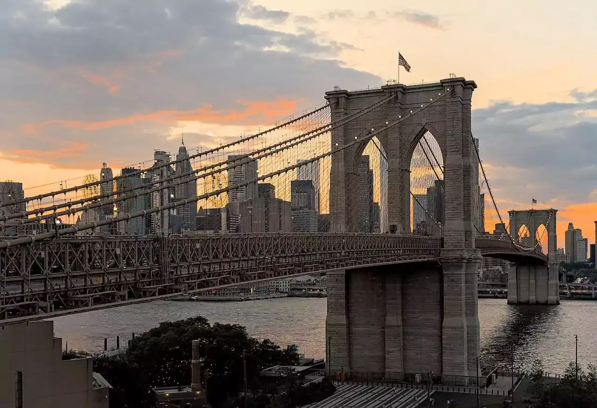
🖼️ Photo — Mer. 21 — Brooklyn Bridge & Nets 🏀-
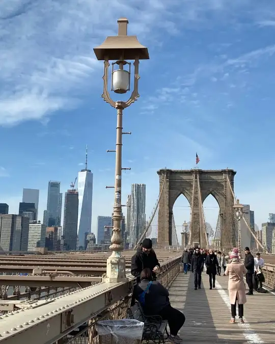
🖼️ Photo — Traversée du pont de BrooklynTraversée du pont de Brooklyn1 hgratuit -
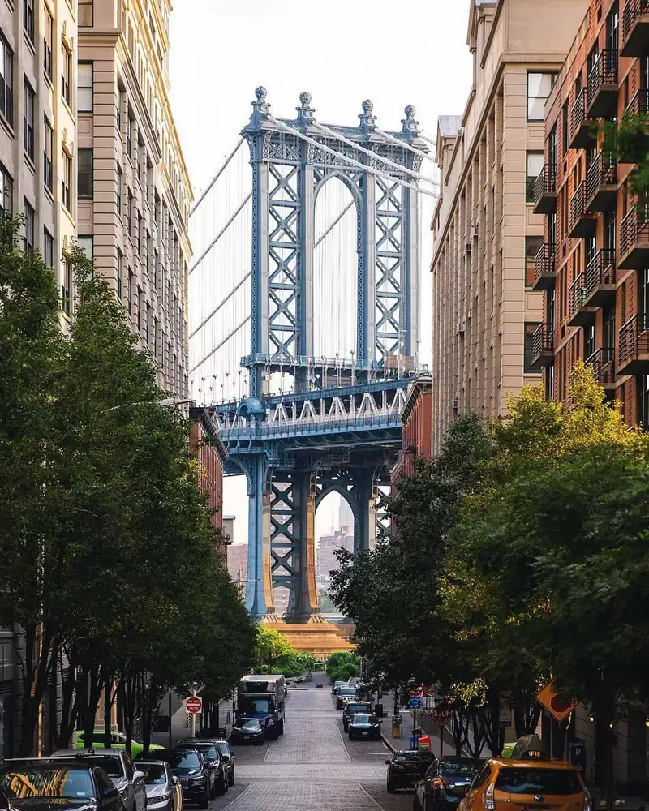
🖼️ Photo — DUMBO (Washington Street)DUMBO (Washington Street)1 hgratuit -
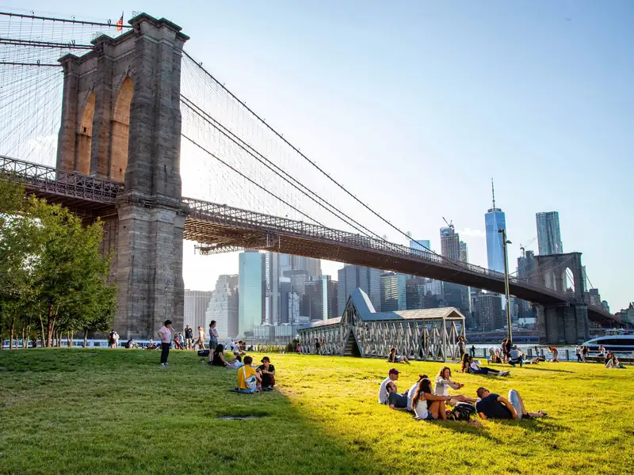
🖼️ Photo — Brooklyn Bridge ParkBrooklyn Bridge Park1 hgratuit -
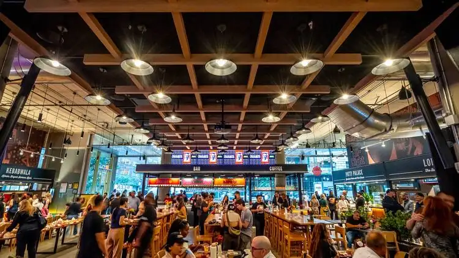
🖼️ Photo — Déjeuner — DUMBODéjeuner DUMBO
Time Out Market New York (halle avec plein de stands + terrasse vue sur le pont — parfait à 7). Ou les pizzas cultes : Juliana's / Grimaldi's. -
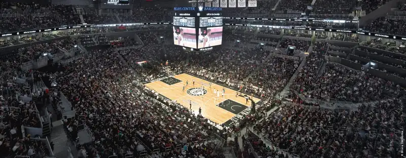
🖼️ Photo — 🏀 Nets vs Hornets — Barclays Center🏀 Nets vs Hornets — Barclays Center~3 h (19h30)billet à partC'est le match de basket qu'on vise. Salle accessible (Atlantic Av-Barclays), places PMR à réserver tôt. Dînez vers Atlantic Ave avant le coup d'envoi.
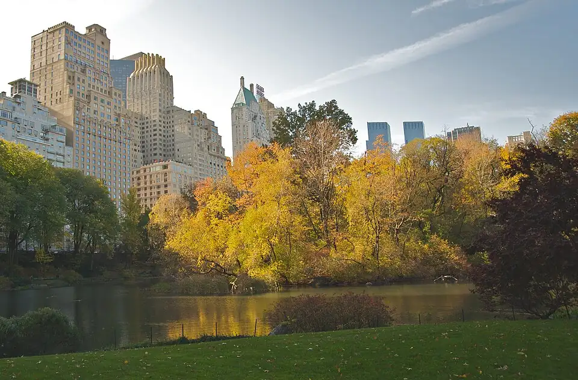
🖼️ Photo — Jeu. 22 — Central Park, The Met & temps libre-
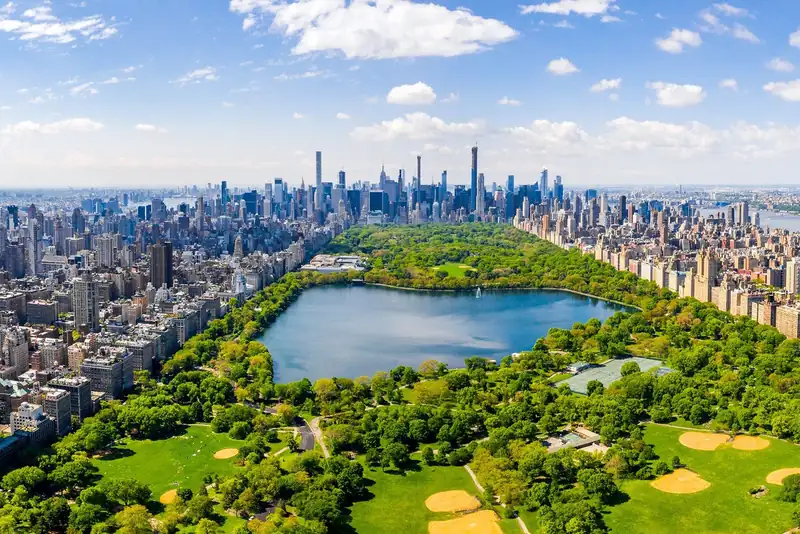
🖼️ Photo — Central Park (couleurs d'automne)Central Park (couleurs d'automne)2 h 30gratuit -
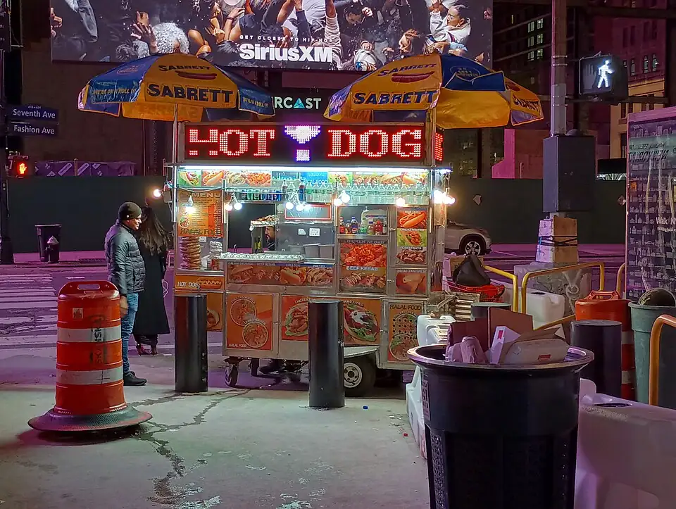
🖼️ Photo — Déjeuner — Central Park / Upper East SideDéjeuner Central Park / Upper East Side
Dans le parc : stands hot-dogs & pretzels, ou pause au Loeb Boathouse (au bord du lac). Vers le Met (Madison Ave) : Le Pain Quotidien ou le diner Nectar. -
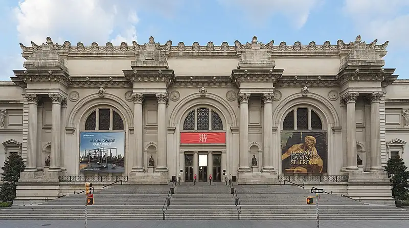
🖼️ Photo — The Metropolitan Museum (Met)The Metropolitan Museum (Met)2 h 30≈ 30 $ -
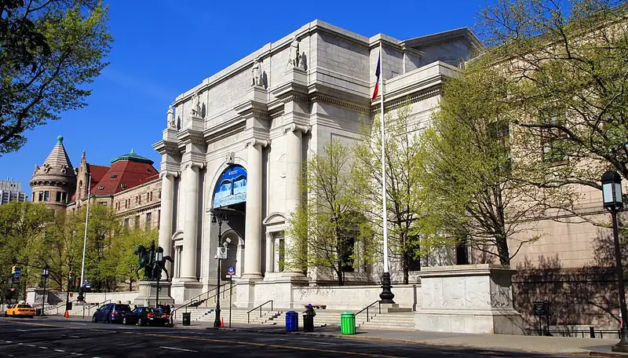
🖼️ Photo — Alt. : Muséum d'Histoire naturelleAlt. : Muséum d'Histoire naturelle côté ouest2-3 hinclus Go City - 🖼️ Photo — Temps libre / au choix — le groupe se sépareTemps libre / au choix — le groupe se séparefin d'aprèm → soirà partC'est le créneau pour ceux qui veulent des sensations, pendant que les autres soufflent :
• 🚁 Survol de Manhattan en hélicoptère — départ à l'héliport de Downtown Manhattan (Pier 6, près de Wall St / du 9/11), vol ~15-20 min, vues de dingue. À réserver, mieux vaut avant le coucher du soleil (~18h en octobre).
• 🎯 Stand de tir — plusieurs ranges dans le New Jersey, proches de votre base (côté Jersey City / Union). À réserver (pièce d'identité demandée).
• Les autres : shopping 5e Avenue / Madison, café, ou retour au logement pour se reposer.
Journée volontairement plus légère pour laisser ce bloc. Si ça ne rentre pas, le lundi (jour du départ) est aussi une grande fenêtre libre.
-
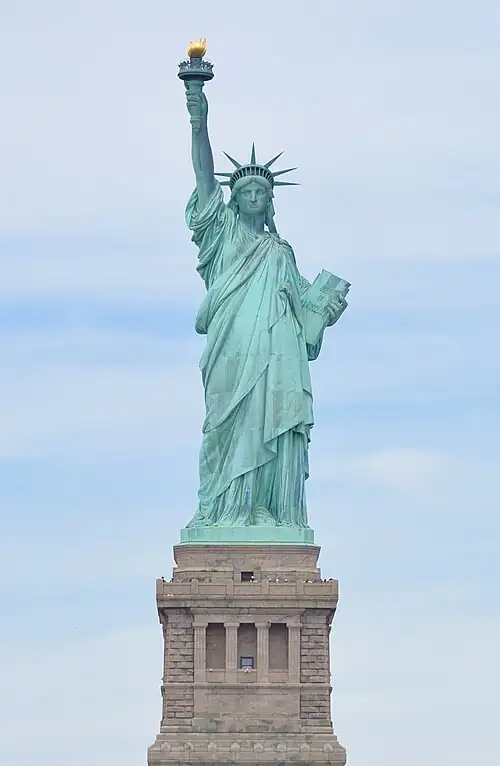
🖼️ Photo — Statue de la Liberté (Liberty Island)Statue de la Liberté (Liberty Island)1 h 30inclus Go City (ferry) -
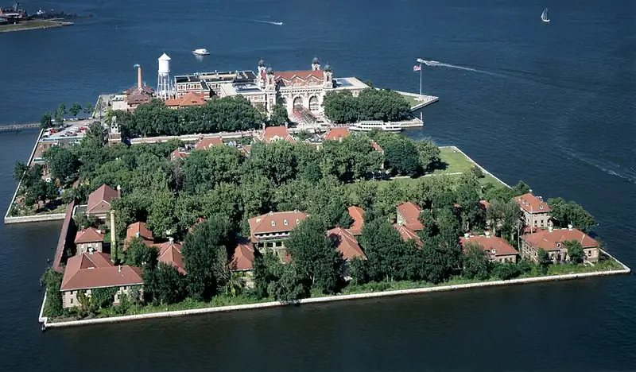
🖼️ Photo — Ellis IslandEllis Island2 hinclus Go City (ferry) -
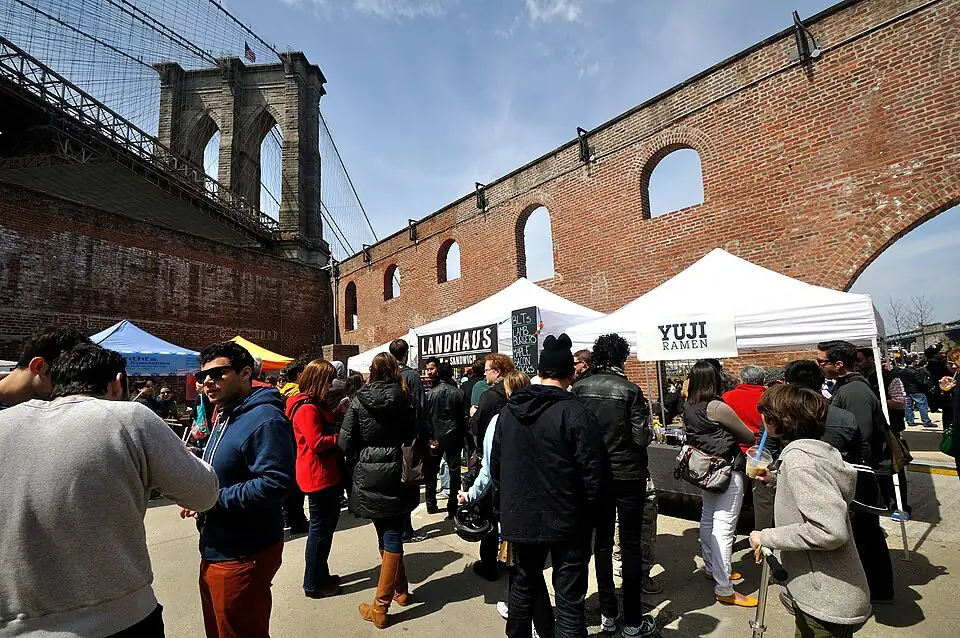
🖼️ Photo — Déjeuner — Financial District / World Trade CenterDéjeuner Financial District / World Trade Center
De retour à Manhattan : Hudson Eats (halle à Brookfield Place, vue Hudson) ou Liberty Market dans l'Oculus. Bonus vendredi : Smorgasburg WTC, le marché de food trucks — uniquement le vendredi, juste à côté ! -
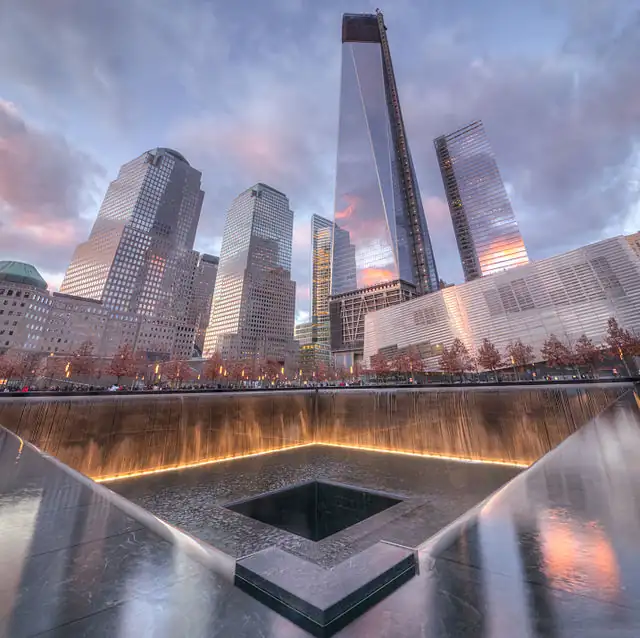
🖼️ Photo — 9/11 Mémorial & Musée + Oculus9/11 Mémorial & Musée + Oculus2 h 30inclus Go City -
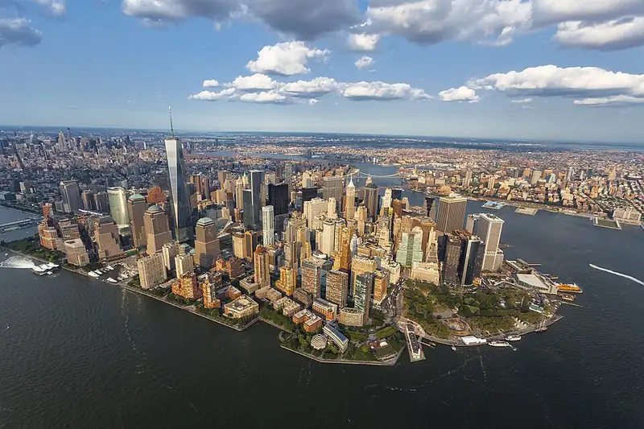
🖼️ Photo — One World ObservatoryOne World Observatory 1 observatoire1 h 30inclus Go City💡 L'héliport de Downtown est juste à côté d'ici : si l'hélico vous tente plutôt aujourd'hui que jeudi, ce quartier s'y prête bien. -
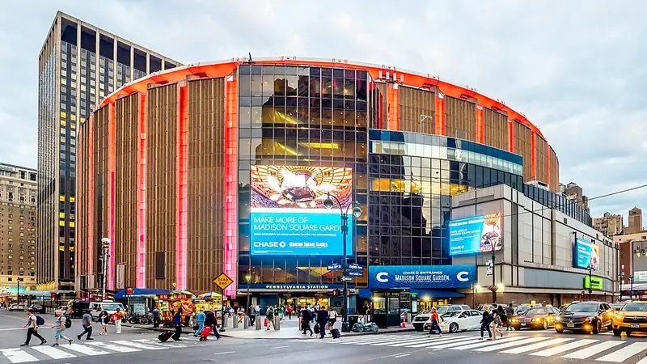
🖼️ Photo — Soir : Knicks vs Celtics (MSG)Soir : Knicks vs Celtics (MSG) en plus, optionsoiréebillet à partLe match de basket qu'on vise reste celui des Nets (mercredi). Ceci n'est qu'un bonus si certains veulent aussi vivre le MSG.
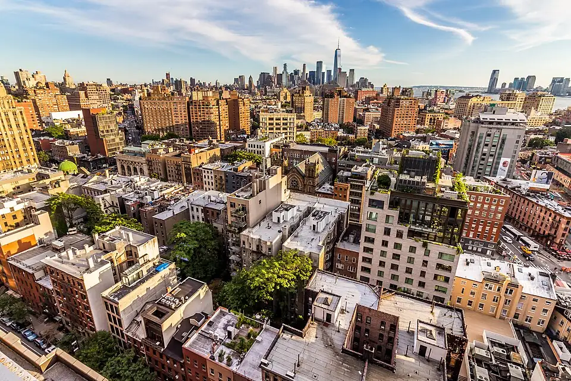
🖼️ Photo — Sam. 24 — High Line, Village & SoHo-
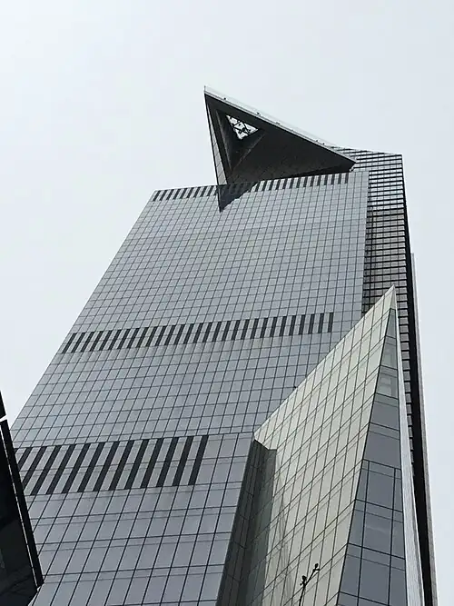
🖼️ Photo — The Edge / Hudson YardsThe Edge / Hudson Yards 1 observatoire1 h 30inclus Go City -
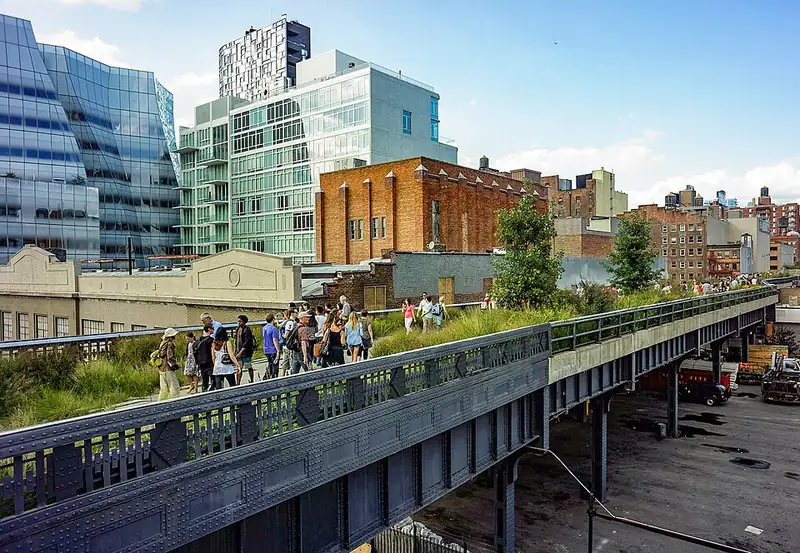
🖼️ Photo — The High LineThe High Line1 hgratuit -
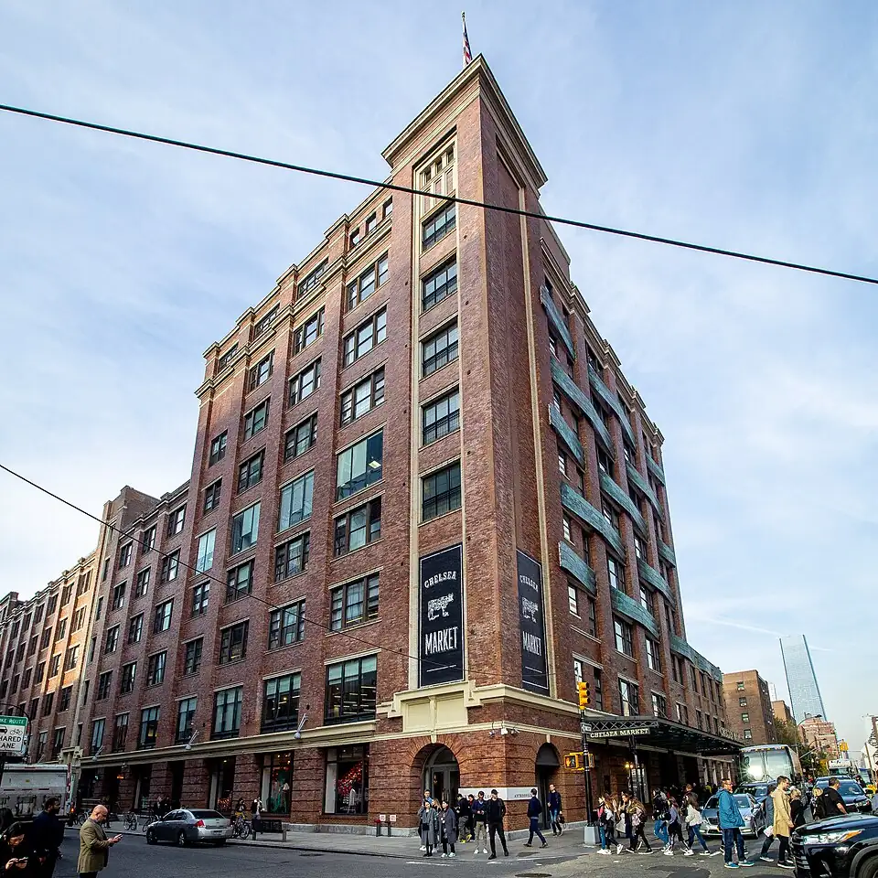
🖼️ Photo — Déjeuner — ChelseaDéjeuner Chelsea
Chelsea Market — la halle gourmande au pied de la High Line (tacos Los Tacos No.1, lobster rolls, ramen, pâtisseries…). Idéal à 7. -
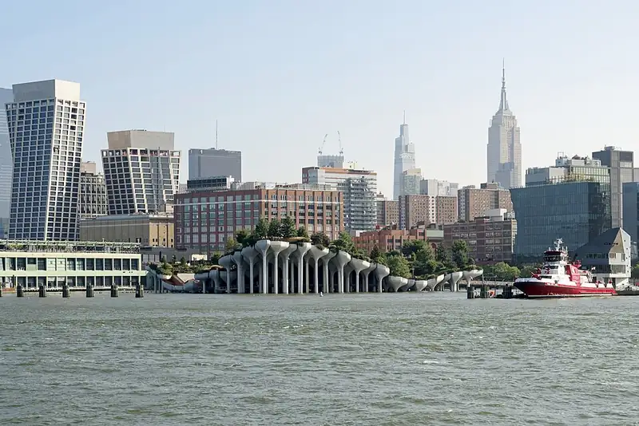
🖼️ Photo — Little IslandLittle Island crochet30 mingratuit -
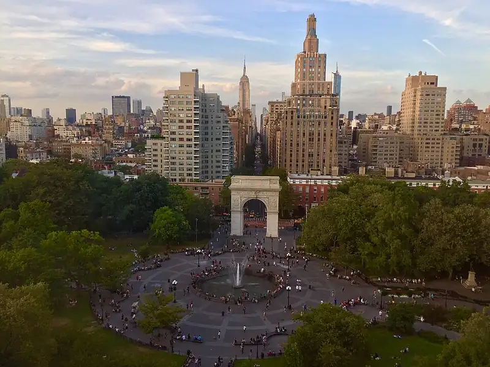
🖼️ Photo — Washington Square & Greenwich VillageWashington Square & Greenwich Village45 mingratuit -
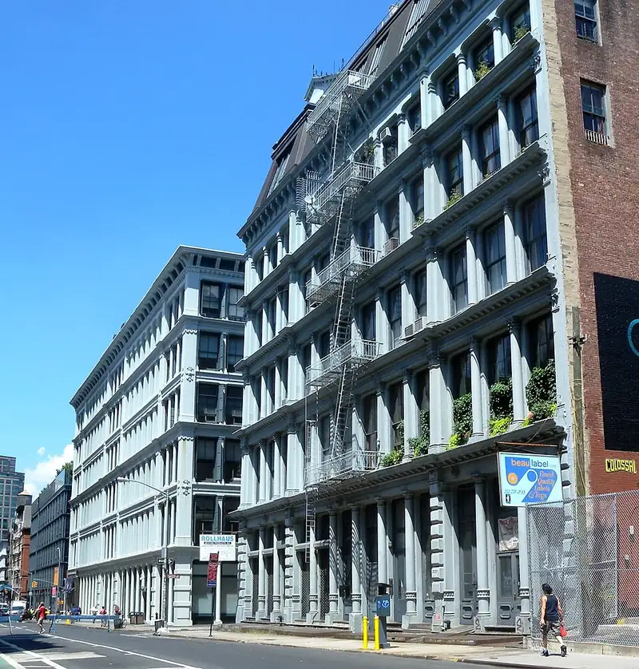
🖼️ Photo — SoHo → Chinatown / Little ItalySoHo → Chinatown / Little Italy1 h 30gratuit - 🖼️ Photo — Dîner — Village / ChinatownDîner Village / Chinatown
Pizza légendaire chez John's of Bleecker Street (Village). Ou dumplings à Chinatown : Shanghai 21 (soup dumplings) ou Jiang Nan.
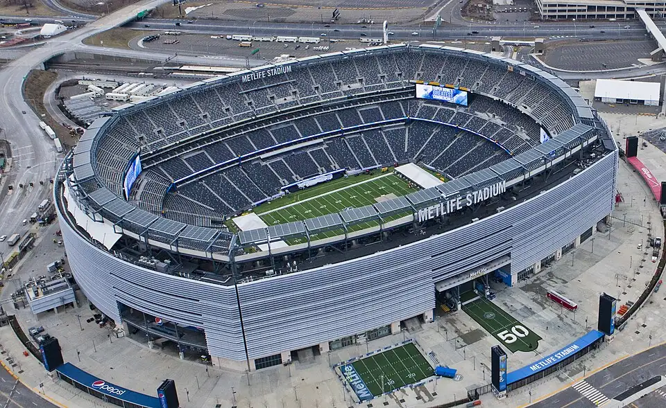
🖼️ Photo — Dim. 25 — Football : Jets vs Dolphins 🏈- 🖼️ Photo — 🏈 Jets vs Dolphins — MetLife Stadium🏈 Jets vs Dolphins — MetLife Stadium~4 h (avant-match + jeu)billet à partC'est le match de foot US qu'on vise. Stade accessible (dépose & places PMR, à réserver tôt). Vêtements chauds : stade à ciel ouvert.
- 🖼️ Photo — Sur place — MetLifeSur place MetLife
Stands du stade (hot-dogs, burgers, bretzels géants…) et tailgate sur le parking. Prévoir carte/cash. -
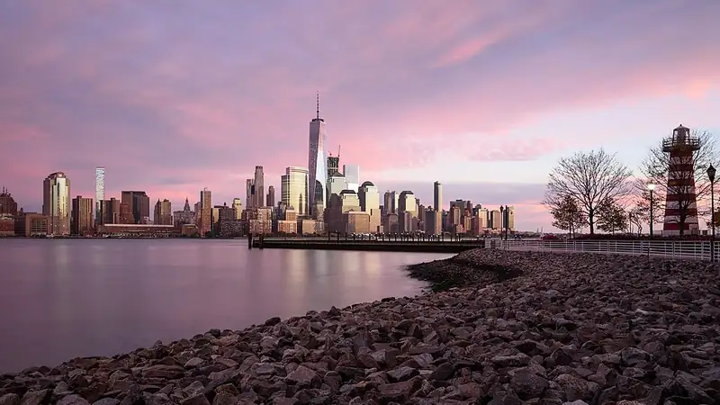
🖼️ Photo — Matinée / soirée libreMatinée / soirée libreau ralentigratuit
-
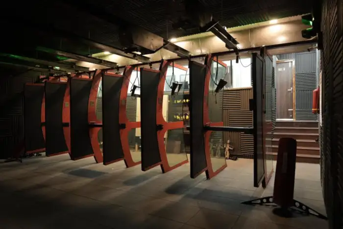
🖼️ Photo — Grande fenêtre libre (2e créneau hélico / stand de tir possible)Grande fenêtre libre (2e créneau hélico / stand de tir possible)la journéeà partJournée ouverte : parfait comme rattrapage pour l'hélico ou le stand de tir si ça n'a pas pu se faire jeudi, ou pour un dernier lieu (Flatiron, shopping, brunch). Pensez à la consigne à bagages. -
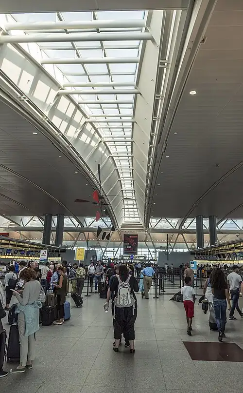
🖼️ Photo — Récupération bagages → JFKRécupération bagages → JFK~1 h de routeà part
Le coin où poser une activité qu'on veut vraiment faire, sans avoir encore décidé du jour. Ajoutez-la avec « ＋ Activité ici » ci-dessous, puis envoyez-la vers le bon jour avec le menu qui apparaît sur son bloc, quand c'est décidé.
Une envie, un spot, un resto qui n'est pas au programme ? Proposez-le ici : tout le monde le voit en direct, on tranchera ensemble.
| Activité | Ça m'intéresse | Proposé par |
|---|